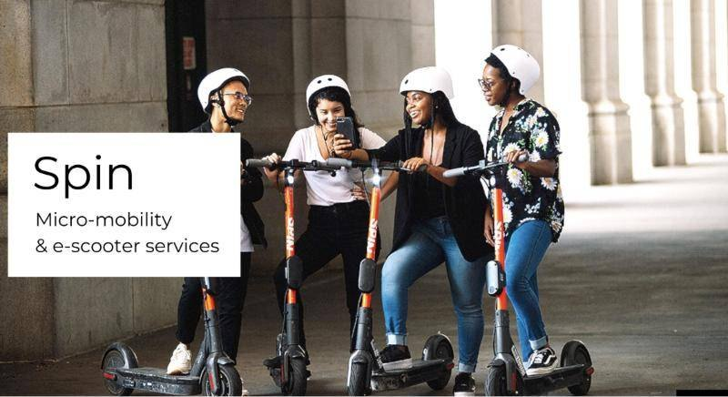
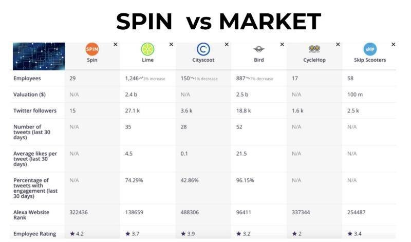
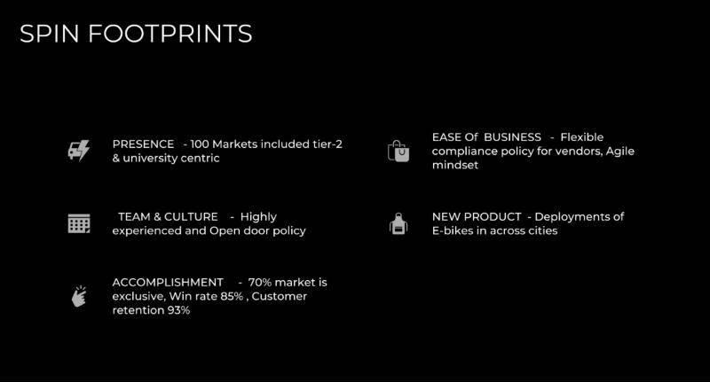
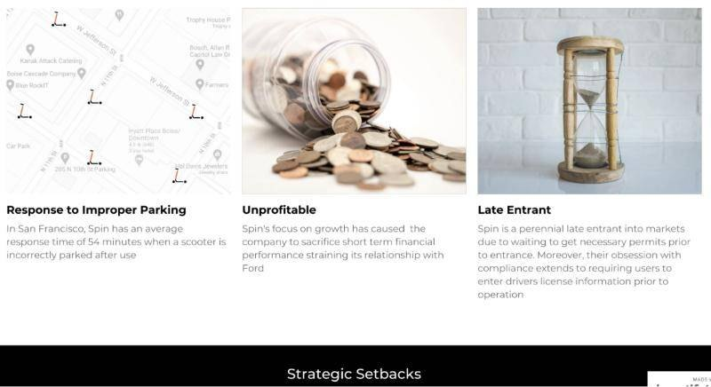
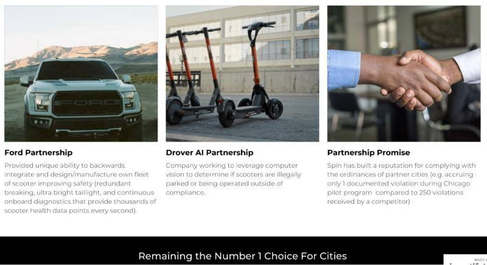

Corporate strategy, forecasting
Corporate strategy: Spin

Team and roles
I worked in a team of four (Rohan Paliwal, Alana Mittleman, Chirag Huria, and Ellie Kozah). Although we had different assigned roles, we all worked as product managers.



